12 Appendix A:Monitoring & Water Level Correction Framework
This document outlines the monitoring program and water level correction methodology applied across the study sites.
12.1 Monitoring Locations
Loggers were deployed at multiple intertidal sites across Giralia (Figure 12.1) and Urala (Figure 12.2). Monitoring spanned across a cross-shore gradient, capturing distinct hydrodynamic zones including lower channel/mouth locations, mid-creek reaches, upper tidal zones, and algal mat edges.(Figure 12.3 and Figure 12.4) shows the detailed spatial configuration of logger deployments across the lower, mid, and upper reaches of both estuaries.
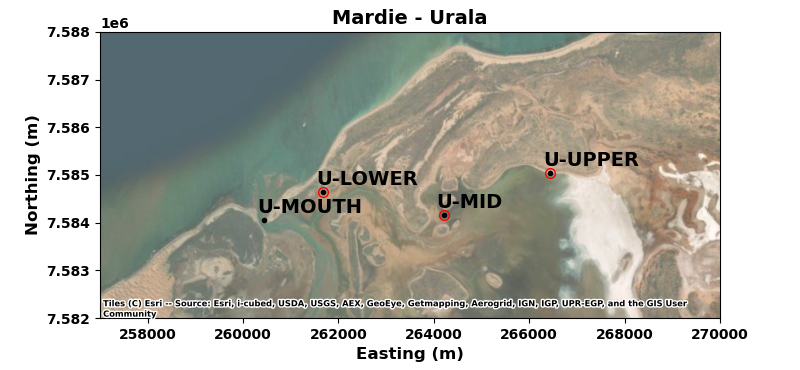
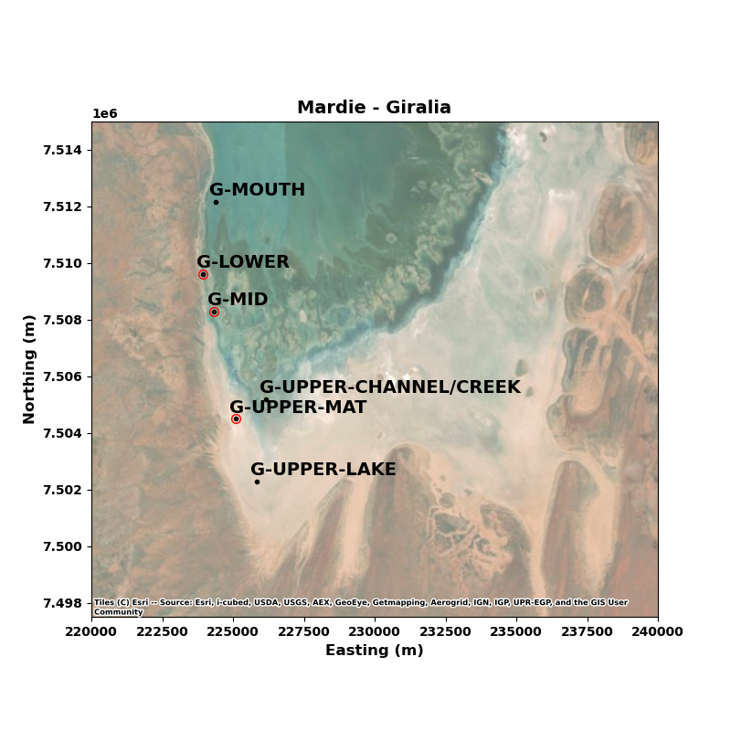
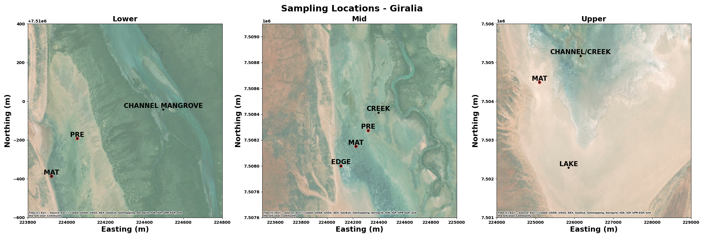
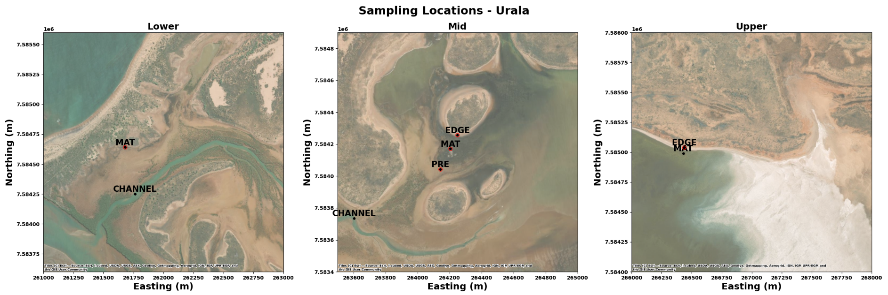
12.2 Sampling Program
Logger deployment commenced on 31 October 2023 and concluded on 9 February 2025. A maintenance and data recovery check was conducted in April 2024, during which select loggers were retrieved, redeployed, or added to the array.
The complete spatial configuration and record durations are summarized in Table 12.1 and Table 12.2.
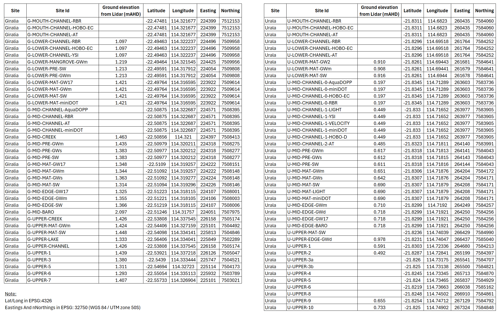
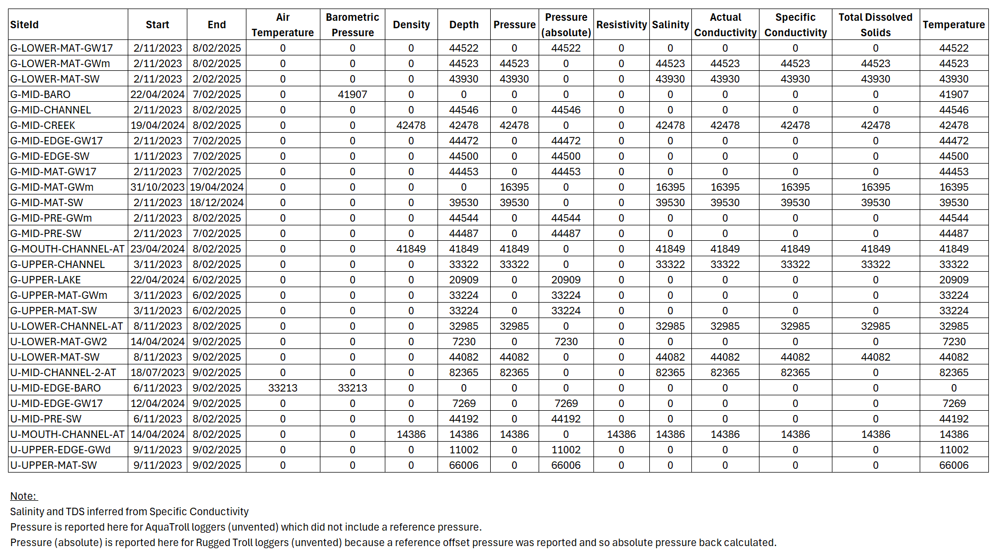
12.3 Water Level Correction Methodology
To convert raw pressure recorded by submerged loggers into accurate water surface elevations, a three-stage correction pipeline was applied:
- Barometric Correction
- Density Correction
- Datum Correction
12.3.1 Barometric Correction
Because non-vented pressure loggers were used, total recorded pressure required adjustment for atmospheric pressure fluctuations. Continuous barometric pressure was measured at both Giralia and Urala (Figure 12.5).
To fill missing data during periods when the Giralia barometric logger was offline, an empirical linear regression model was established using Urala barometric observations (Figure 12.6). All barometric pressure series were interpolated to a 15-minute interval prior to subtraction.
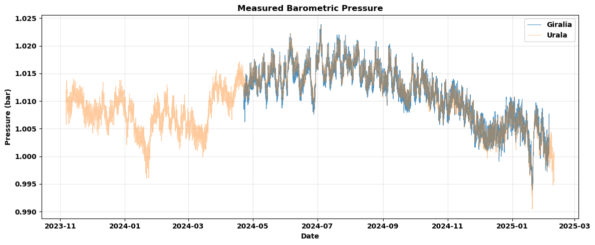
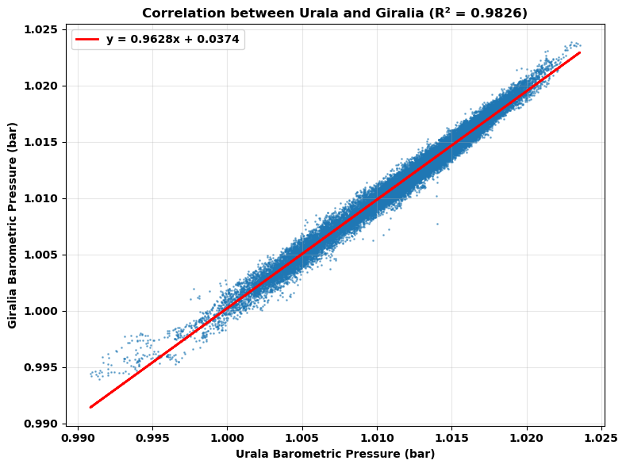
12.3.1.1 Rugged Troll Loggers
Rugged Troll loggers record total pressure (\(P_{\text{logger\_RT}}\)) with a factory-assigned constant barometric offset (\(P_{\text{constant\_offset}}\)). Absolute pressure (\(P_{\text{absolute}}\)) was calculated via:
\[P_{\text{absolute}} = P_{\text{logger\_RT}} + P_{\text{constant\_offset}}\]
Net water pressure (\(P_{\text{water\_RT}}\)) was subsequently isolated by subtracting interpolated barometric pressure (\(P_{\text{barometric}}\)):
\[P_{\text{water\_RT}} = P_{\text{absolute}} - P_{\text{barometric}}\]
An example of the Rugged Troll correction sequence is shown in Figure 12.7.
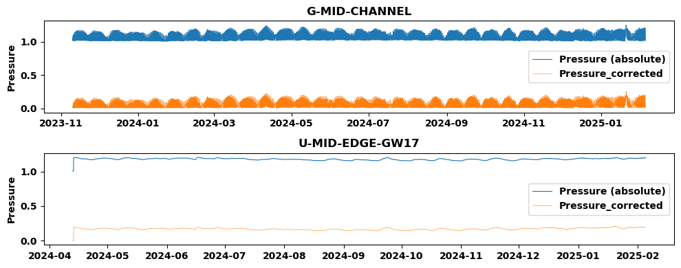
12.3.1.2 AquaTroll Loggers
AquaTroll loggers (\(P_{\text{logger\_AT}}\)) do not store the static offset internally. Net water pressure (\(P_{\text{water\_AT}}\)) was derived relative to average barometric conditions (\(P_{\text{barometric\_average}}\)):
\[P_{\text{water\_AT}} = P_{\text{logger\_AT}} + (P_{\text{barometric}} - P_{\text{barometric\_average}})\]
Note: This formulation assumes initial logger baseline setup occurred near mean atmospheric pressure. An example correction is shown in Figure 12.8.
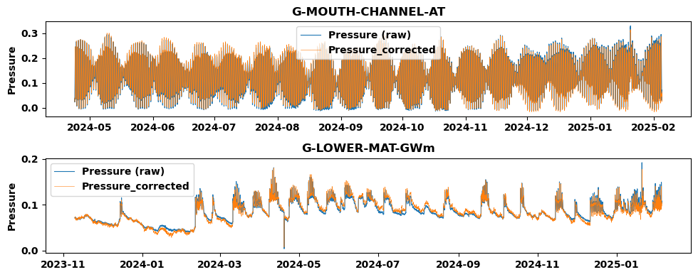
12.3.2 Density Correction
Corrected water pressure (\(P_{\text{corrected}}\) in bar) was converted to water depth (\(H_{\text{corrected}}\) in metres) using variable water density (\(\rho\) in \(\text{g/cm}^3\)). Density was calculated at 15-minute time steps as a function of salinity (\(S\), PSU) and water temperature (\(T\), °C):
\[\rho = 1000 + 0.75 \cdot S - 0.2 \cdot (T - 4)\]
While temperature was continuously recorded across all sites, missing salinity records were reconstructed using a hierarchical fallback sequence:
- Mean salinity observed at the same
SiteId. - Mean salinity from a assigned fallback site (
Fallback_Salinity_SiteId, Table 12.3). - Mean salinity across the local geomorphic location category.
- Mean regional salinity (Giralia vs. Urala).
| Target SiteId | Fallback Salinity SiteId |
|---|---|
| Fallback mappings | … |
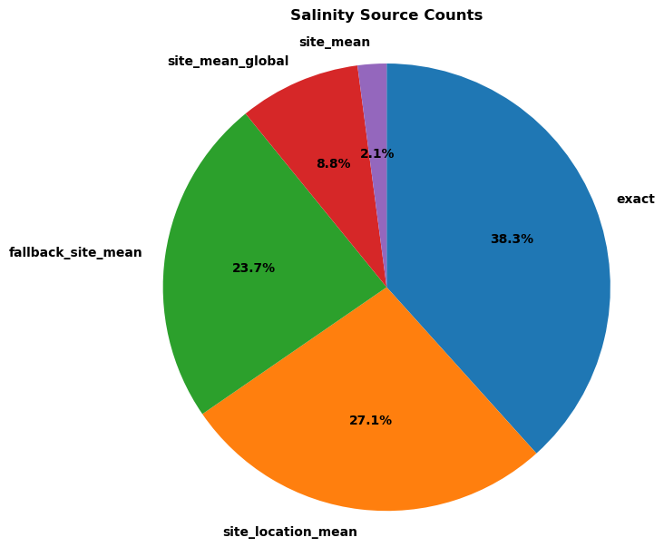
Calculated densities showed strong agreement (\(r^2 > 0.94\)) against sites equipped with direct density sensors (Figure 12.10 and Figure 12.11).
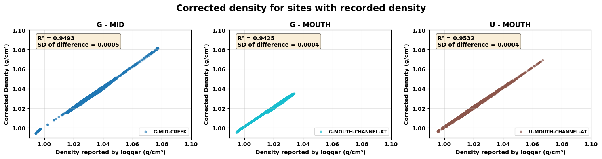
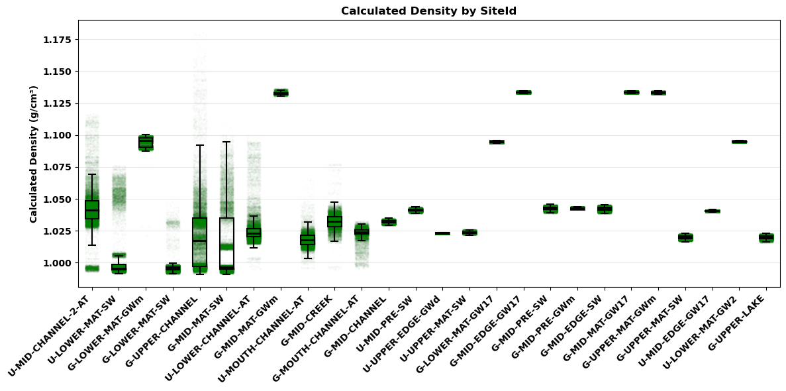
Corrected water depth above the logger was calculated via:
\[H_{\text{corrected}} = \frac{P_{\text{corrected}} \cdot 10.1972}{\rho}\]
Linear regression between \(H_{\text{corrected}}\) and \(P_{\text{corrected}}\) yielded a correlation coefficient of \(0.996\) (Figure 12.12). Residual analysis comparing logger-reported depth versus density-corrected depth revealed a residual standard deviation of \(7.3\text{ cm}\) (Figure 12.13), which represents a notable magnitude in shallow intertidal systems.
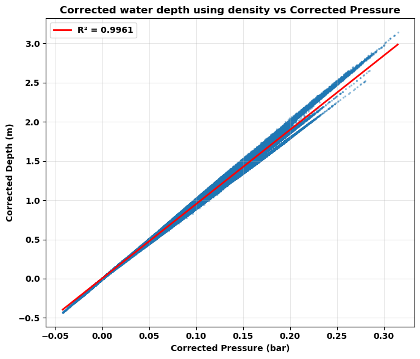
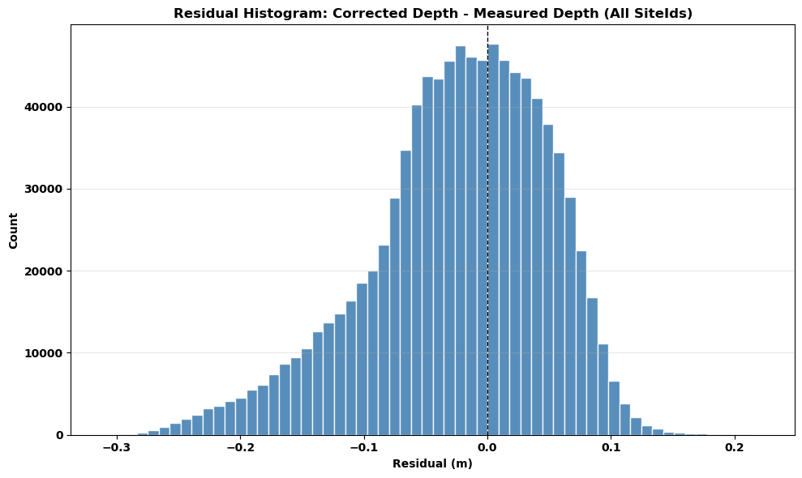
12.3.3 Datum Correction
Because initial logger sensor elevations were un-surveyed, elevations were referenced to Australian Height Datum (mAHD) using LiDAR ground elevation baselines (Table 12.1) and regional tide gauge calibrations.
- Estuarine Mouth Calibration: Submerged loggers at the Giralia and Urala river mouths were calibrated against mAHD tidal observations from the Exmouth tide gauge by matching peak spring tide elevations (Figure 12.14 and Figure 12.15).
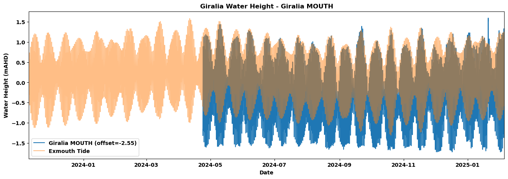
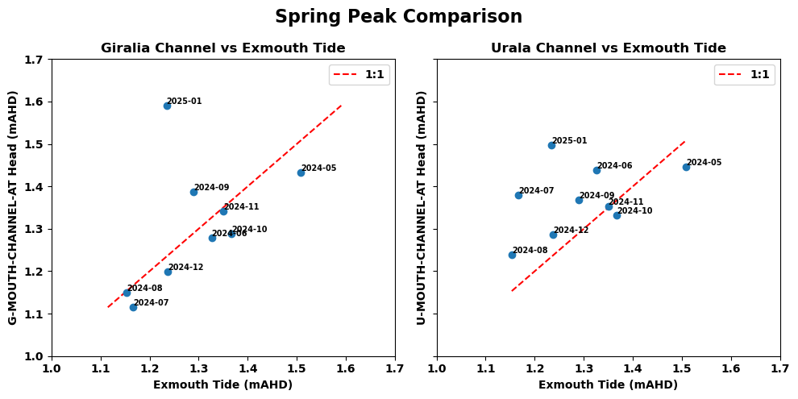
- Upstream Hydraulic Calibration: Upstream loggers were sequentially adjusted to match monthly peak water levels along primary hydraulic conveyances (e.g., Mouth Channel \(\rightarrow\) Mid Channel \(\rightarrow\) Mid Creek \(\rightarrow\) Upper Channel \(\rightarrow\) Algal Mat). Peak correlations along connected flow paths are shown in Figure 12.16 and Figure 12.17.
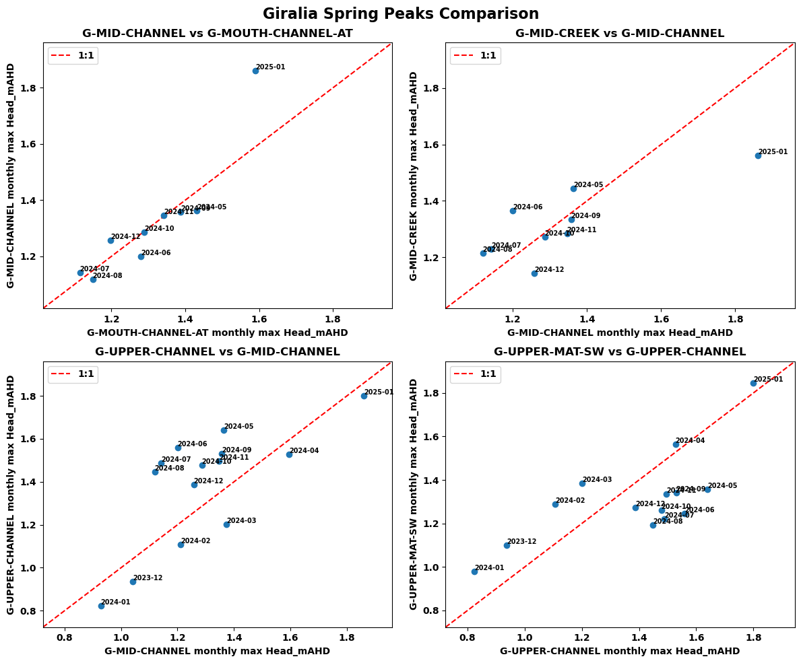
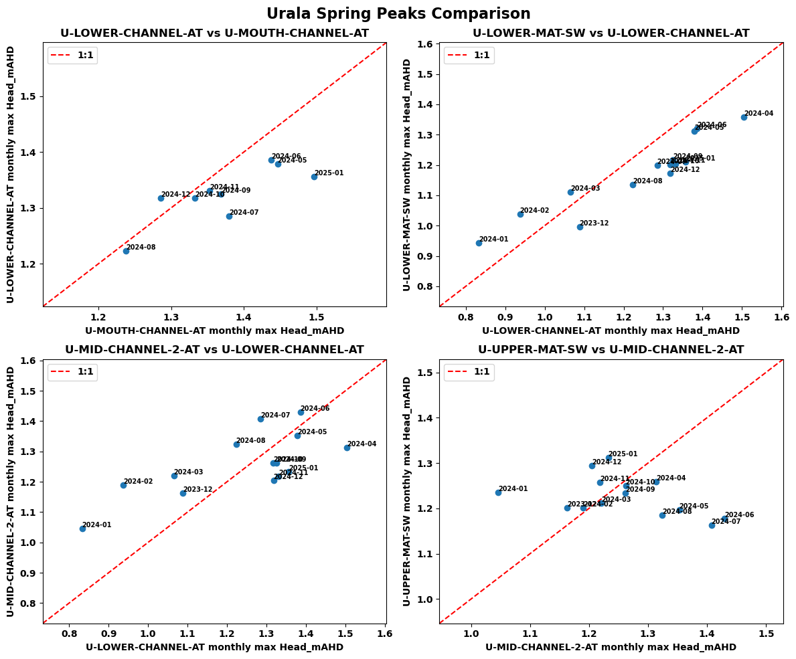
The impact of datum adjustments on raw water elevation series during a representative period (December 2024) is illustrated in Figure 12.18 and Figure 12.19.
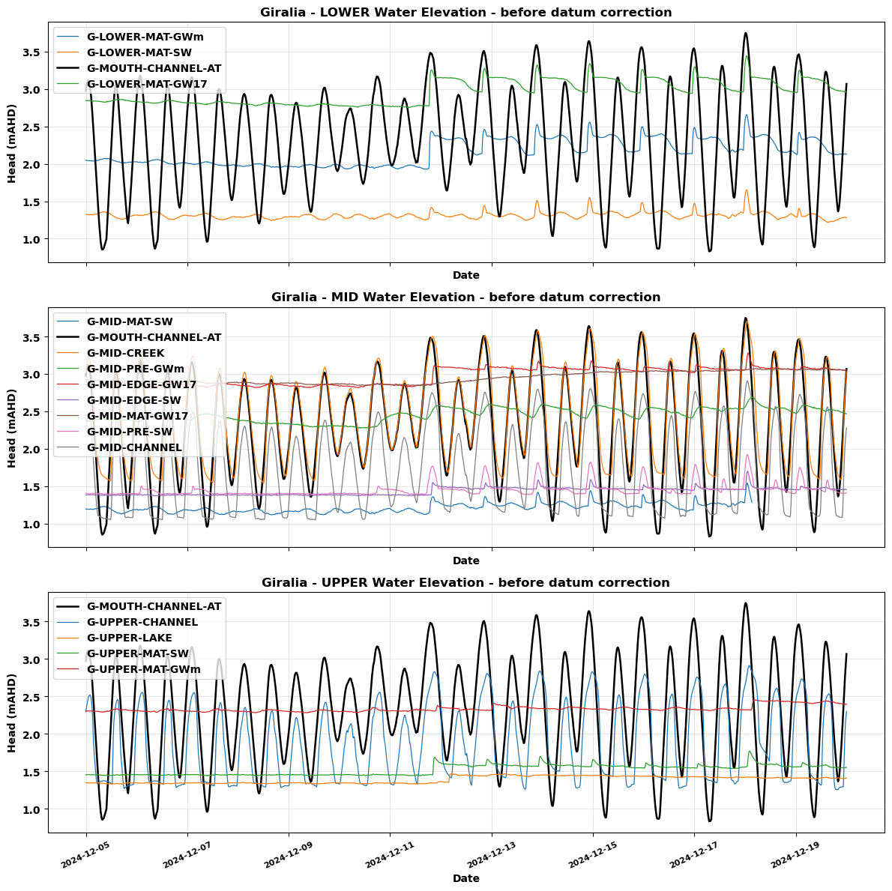
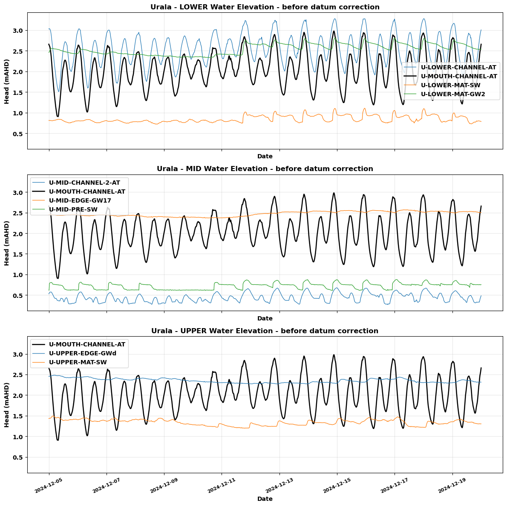
12.4 Results & Hydraulic Dynamics
The calibrated water level dataset enables spatial and temporal cross-sectional analyses across both estuaries.
Response during extreme events—such as the 11 April 2024 storm event—highlights cross-shore head gradients and inundation extent across the intertidal platform (Figure 12.20 and Figure 12.21).
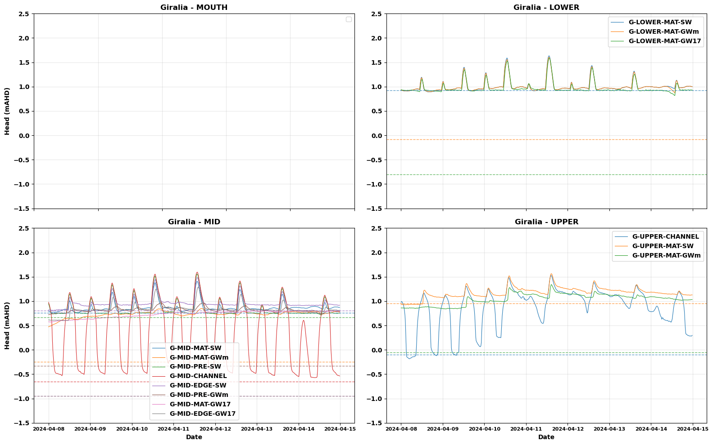
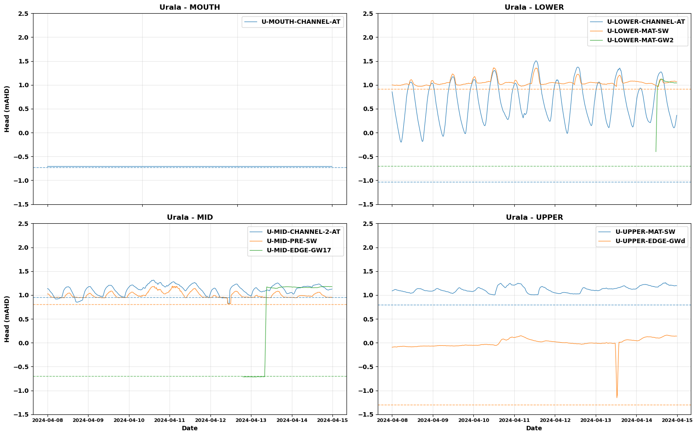
12.4.1 Spatial Cross-Sections and Groundwater Dynamics
Cross-sectional profiles reveal distinct spatial-temporal hydroperiod trends from the primary channels to the upper algal mats (Figure 12.22).
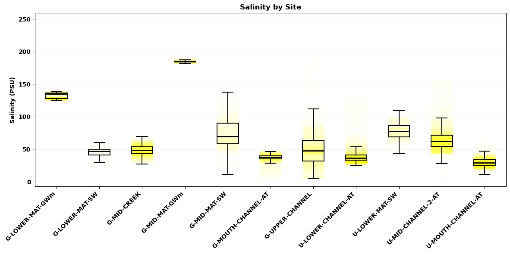
Analysis of paired surface-water and groundwater monitoring loggers enables derivation of local hydraulic gradients. These gradients govern subsurface porewater exchange, hypersaline groundwater discharge, and ecohydrological feedback loops within the intertidal mangrove-mat transition zone.